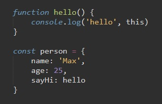
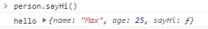
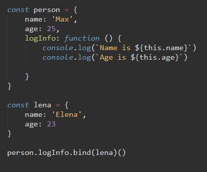

this не является константой - в разных местах программы оно может возвращать разные значения. Внутри метода this возвращает объект, относительно которого был вызван методк
Рассмотрим код:
Теперь в консоли введем "person.sayHi()" и мы получим результат
что мы сделали? мы применили функцию hello к нашему объекту. Но в функции есть контекстное слово this, которое в консоль выводит объект к которому была применена эта функция. иными словами в данном контексте слово this указывает на объект к которому был применен метод hello. Еще проще, THIS указывает на того кто стоит перед функцией, к кому была применена функция.
Еще один пример
У нас здесь есть два объекта: person и lena. Первый имеет метод logInfo, который выводит в консоль данные объекта с помощью слова this.
Если мы с помощью метода bind применим функцию первого объекта ко второму, то в этом случае контекстное слово this будет ссылаться на объект к которому применяется метод. Иными словами слово this делает нашу функцию динамической и универсальной, применимой к другим обьектам.